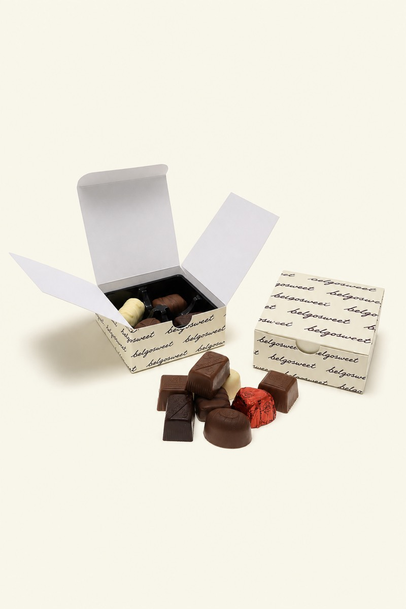
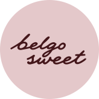
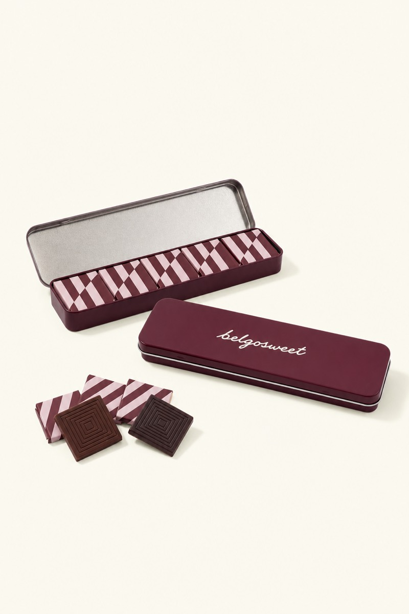
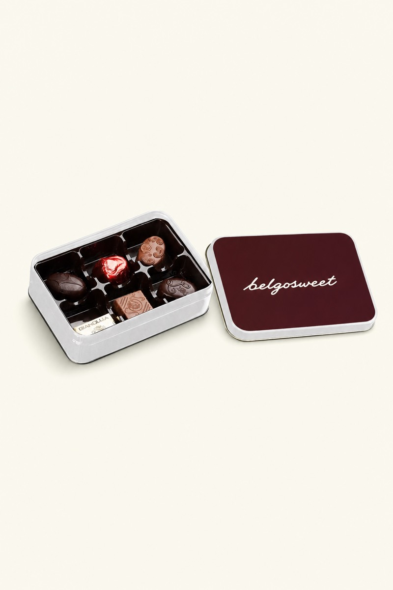
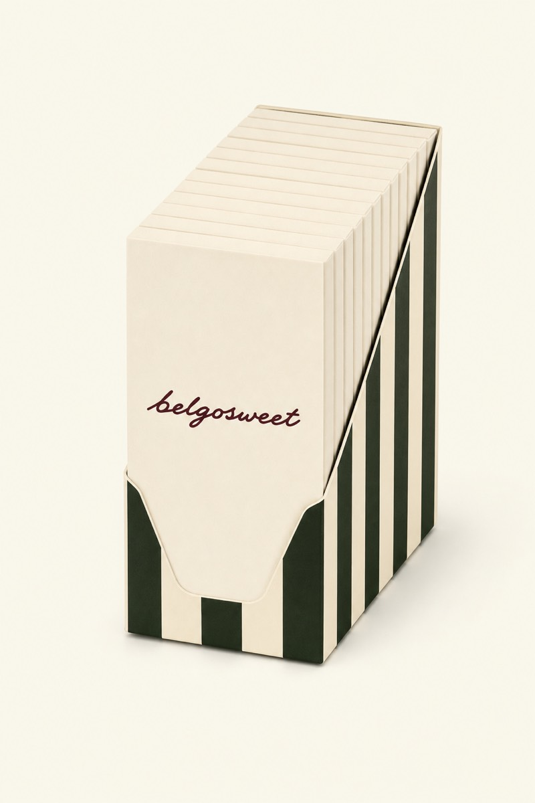
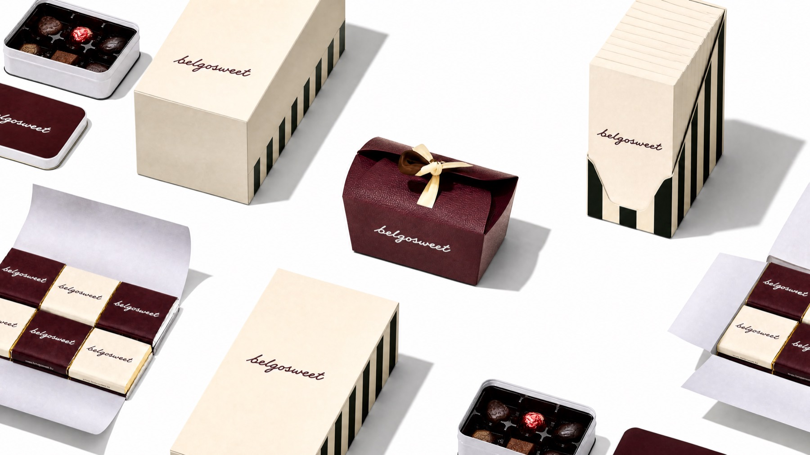

1998

Het eerste doosje
Twee mensen, één bestelwagen en een handvol Belgische chocolatiers.
Belgosweet Waver sinds 1998
Zevenentwintig jaar Belgische chocolade, koekjes en snoep — met het logo van iemand anders erop.

In 1998 begonnen we met twee mensen, één bestelwagen en een handvol Belgische chocolatiers. We kenden de makers bij naam. Dat is nooit veranderd.
Wat toen doorverkoop was, is uitgegroeid tot meer dan honderdvijftig artikelen: van pralines tot adventskalenders. Allemaal voor bedrijven die iets weggeven en willen dat het klopt: het juiste moment, de juiste hoeveelheid, en een logo dat erop gedrukt staat in plaats van erover geplakt.
Wat níét veranderde: elke aanvraag wordt door één persoon opgevolgd, van offerte tot levering. Geen ticketnummer, geen doorverbinden. Dat is de reden dat klanten van het eerste uur er vandaag nog zijn.
Het team van Belgosweet, Waver
1998

Twee mensen, één bestelwagen en een handvol Belgische chocolatiers.
2003

Leonidas, Jules Destrooper en Galler komen in het vaste assortiment.
2009

Van sleeve tot volledige doosbedrukking. Het verschil met een sticker erover.
2014

Verpakken en assembleren gebeurt sindsdien samen met Axedis.
2019

Adventskalenders groeien uit tot de specialiteit van het huis.
Vandaag

Zestien categorieën, zeven merken, en nog altijd één aanspreekpunt per klant.

Het verpakken en assembleren van onze geschenken gebeurt in samenwerking met een sociale inschakelingsonderneming.
Dat loopt al meer dan tien jaar. Het is geen project en geen proefopstelling: het is hoe elke doos die hier vertrekt in elkaar gezet wordt. Het is ook een van de weinige dingen waar we bewust nooit op besparen.
Elke aanvraag wordt door één persoon opgevolgd, van offerte tot levering. Dit zijn ze, en dit is waarvoor je bij wie moet zijn.
Zaakvoerder
“Ik ken elke chocolatier in dit assortiment persoonlijk. Daarom staat er niets in dat ik zelf niet zou weggeven.”
Naam Achternaam
Inkoop en merkpartners
Accountmanager
“Bel me in september voor december. In november kan het nog, maar dan kies je uit minder.”
Naam Achternaam
Offertes en eindejaarsdossiers
Personalisatie
“Stuur je logo door, dan krijg je een proefdruk voor je beslist. Op papier, niet op scherm.”
Naam Achternaam
Drukwerk, proefdrukken en stalen
Logistiek
“Vijfhonderd dozen op één adres of vijf op honderd adressen — zeg het erbij, dan plan ik erop.”
Naam Achternaam
Planning en levering
Bel gerust. Je krijgt geen keuzemenu maar iemand die je dossier kent.
Geen offerte nodig maar wel een vraag? Dit formulier komt bij dezelfde persoon terecht.